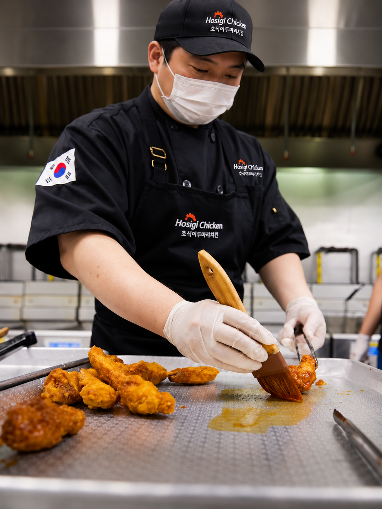

1999
브랜드 역사
두 마리 치킨 체인사업 시작

HOSIGI FRANCHISE · SINCE 1999
1999년부터 이어온 호식이의 발걸음,
이제 당신의 새로운 시작과 함께합니다.
두 마리 치킨 체인사업 시작
2024년 말 기준
차별화된 브랜드 가치
교육과 운영 준비
FRANCHISE PERFORMANCE
오랜 시간 쌓아온 경험과 경쟁력,
호식이의 성장에는 이유가 있습니다.

POINT 01
두 마리 치킨이라는 차별화된 콘셉트로 고객에게 선택의 즐거움을 전합니다.
POINT 02
오랜 브랜드 운영 경험을 바탕으로 새로운 시작을 함께합니다.

POINT 03
간장치킨과 매운간장치킨부터 다양한 치킨과 사이드까지 고객의 취향에 맞는 선택지를 제공합니다.
POINT 04
가맹점과 가맹본부의 상생협력위원회 발족 등 상생의 발자취를 이어왔습니다.
OUR NETWORK
공시된 연도별 운영 지표를 확인하세요.
2024년 말 전국 가맹점
2022~2024년 가맹점 수는 감소했습니다. 2024년에는 신규 개점 61개가 공시되었습니다.
자료: 가맹사업 정보공개서 공개 사본 · 각 사업연도 말 기준
2024년 사업연도 · 개별 점포가 아닌 공시 기준
만원 미만 절사 · 부가세 제외
2024년 사업연도
2024년 사업연도
평균 매출은 일부 점포를 제외한 공시 기준이며 순이익이나 개별 매장 매출을 보장하지 않습니다.
OUR JOURNEY
두 마리 치킨 체인사업 시작
ISO 9001 품질경영인증 획득
프랜차이즈 동반성장 우수가맹본부 표창
1,000호점 개점 및 한국소비자원 소비자만족도 종합 1위
가맹점·가맹본부 상생협력위원회 발족
자료: 공식 기업연혁 · 과거 이력으로 현재 인증·가맹점 수와 다릅니다.
FRANCHISE GUIDE
창업 준비부터 매장 운영까지 필요한 정보를 확인하세요.
개설 준비의 일반적인 흐름입니다. 실제 일정은 본사와 협의하세요.
정보공개서와 가맹계약서를 확인합니다.
점포 조건에 맞춰 시설을 준비합니다.
필수 교육과 초도물품, 운영 준비를 점검합니다.
정보공개서 기준 33㎡(약 10평) · 단위: 만원
| 항목 | 금액 | 비고 |
|---|---|---|
| 가맹비 | 275 | 부가세 포함 |
| 교육비 | 165 | 부가세 포함 |
| 계약이행보증금 | 300 | 부가세 없음 |
| 기타 개설비용 | 1,530 | 간판·설비·초도물품 등 |
| 공개 항목 합계 | 2,270 | 별도 비용 제외 |
인테리어, 임대, 인허가 등 별도 비용이 발생할 수 있습니다. 실제 견적과 세부 포함 항목은 계약 전 확인하세요. 정보공개서 확인 · 공식 창업 안내
희망 지역과 점포 보유 여부를 정리해 본사에 문의하세요.
점포 규모와 시설 조건에 따라 실제 비용은 달라집니다.
계약 전 본사와 필수 교육 대상 및 일정을 확인하세요.
아닙니다. 비용 차감 전 매출이며 개별 매장 수익을 보장하지 않습니다.
공식 가맹 개설 문의 080-992-9922 또는 공식 홈페이지에서 확인하세요.
개설 전 교육 및 운영 관련 확인 항목입니다. 실제 지원 범위는 본사와 협의하세요.
개점 전 교육 및 운영 기준 안내
후보 점포 분석 및 운영 준비
필수 물품 규격과 POS 운영 체계 확인
FRANCHISE CONSULTING